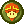

|
The battle system in this game is very simplistic, yet incredibly effective. While many
RPGs love to inflate the numbers to extremely high amounts (Eg. "YOU DID 13356 DMG!"), this
game keeps the numbers low, which I really like. It adds to the strategy of things
because it makes the damage and HP numbers countable, so every turn can be completely
calculated to your desires.
During your turn, you can do one of five things: Jump
attack,  Hammer attack,
Use an
item,
Use a star
power, or Swap your partner. Choosing between jumping and hammering is very engaging,
because certain enemies are too high up to be hammered, while others can be spiky, making
them unable to be jumped on (without getting hurt). Hammer attack,
Use an
item,
Use a star
power, or Swap your partner. Choosing between jumping and hammering is very engaging,
because certain enemies are too high up to be hammered, while others can be spiky, making
them unable to be jumped on (without getting hurt).
In addition to Mario's turn, one of
your partner characters also get to attack. They have many unique abilities, and choosing
between them all and integrating them into your strategy feels very satifying.
This game
also uses action commands,
allowing the player to time their button presses to maximize damage, and defend against
enemy attacks. The implemntation of action commands in this game is flawless, they feel so
good to do!
|
|
 The
other
main part of the gameplay is the overworld gameplay. This is where the game's
world comes to life. This game's overworld gample has multiple types of gameplay elements,
being
puzzles,
platforming, and exploration. The combination of all of these elements is
seamless, making it a joy to explore the world. The
other
main part of the gameplay is the overworld gameplay. This is where the game's
world comes to life. This game's overworld gample has multiple types of gameplay elements,
being
puzzles,
platforming, and exploration. The combination of all of these elements is
seamless, making it a joy to explore the world.
The puzzles are all very unique, and
constantly use new elements and partner abilities throughout the game. It's also very cool
when you unlock a new ability, and find ways to use it in areas that you've already
explored, making the exploration very engaging.
The platforming is
very simplistic, but I think that's what adds to the seamless nature of the overworld
gameplay.
|
|
 As
mentioned
before, the badge system is what really makes this game shine in my opinion.
The amount to which you can tailor your gameplay style with the badges you pick is awesome!
Basically how it works is you have a certain number of badge points, which you
can allot to
different badges that you acquire throughout your journey. You can mix and match, swap out,
and add new badges to your loadout whenever you want, making it extremely flexible. As
mentioned
before, the badge system is what really makes this game shine in my opinion.
The amount to which you can tailor your gameplay style with the badges you pick is awesome!
Basically how it works is you have a certain number of badge points, which you
can allot to
different badges that you acquire throughout your journey. You can mix and match, swap out,
and add new badges to your loadout whenever you want, making it extremely flexible.
There's three main types of badges: Move badges, Stat badges, and Helper badges.
Move badges 
  give
you access to new special moves during battle. One example is the quake hammer, which
generates an earthquake, damaging all enemies on the ground. give
you access to new special moves during battle. One example is the quake hammer, which
generates an earthquake, damaging all enemies on the ground.
Stat badges
give
you some
sort
of status effect, such as more health, more defense, more damage, or better attack evasion.
Helper badges 
 give more passive effects, for example,
more
coins rewarded for battling,
easier action command timing, or alerts for nearby collectibles. give more passive effects, for example,
more
coins rewarded for battling,
easier action command timing, or alerts for nearby collectibles.
With so many diverse
choices, and more as you go thoughout the game, this game is incredibly replayable. Each
badge loadout completely changes your style of play, and it is incredibly fun to experiment
with!
|

 which he stole from Star Haven. It has the power
to grant any wish, which is
dangerous in the hands of Bowser. After losing to the sheer bowser of the Star Rod, Mario
has to
embark on a quest to save the Star Spirits that bowser imprisoned, in hopes that their power
can
be enough to overthrow Bowser and his Star Rod.
which he stole from Star Haven. It has the power
to grant any wish, which is
dangerous in the hands of Bowser. After losing to the sheer bowser of the Star Rod, Mario
has to
embark on a quest to save the Star Spirits that bowser imprisoned, in hopes that their power
can
be enough to overthrow Bowser and his Star Rod.